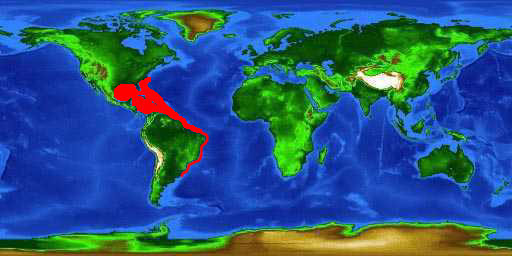
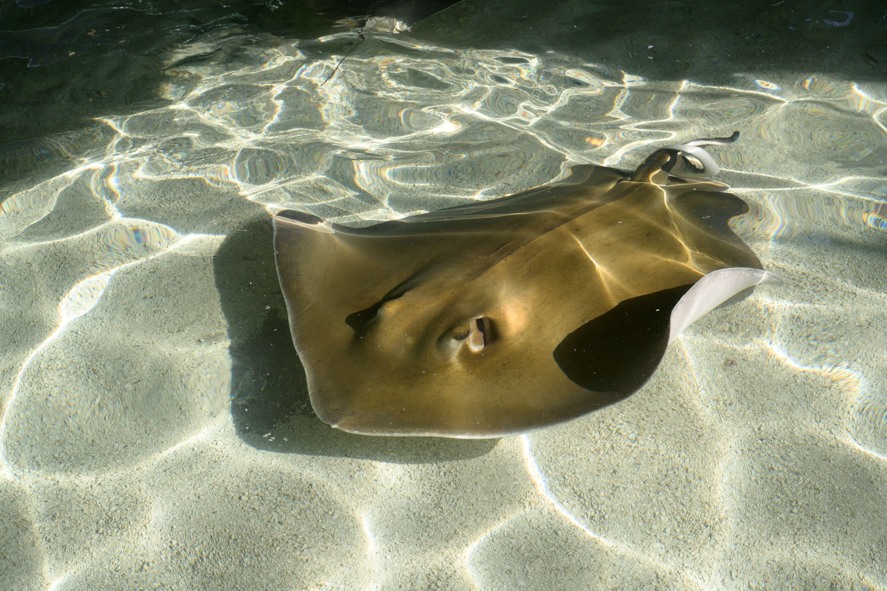

Basic Information
Common Name: Southern Stingray
Status/Conservation: Near Threatened [1]
Full Scientific Classification
| Taxonomic Rank | Classification |
|---|---|
| Kingdom | Animalia |
| Phylum | Chordata |
| Subphylum | Vertebrata |
| Class | Chondrichthyes |
| Subclass | Elasmobranchii |
| Order | Myliobatiformes |
| Suborder | Myliobatoidei |
| Family | Dasyatidae |
| Genus | Hypanus |
| Species | H. americanus |
Physical Profile
- Size Range
- Females can reach up to 5 feet across; males are much smaller, up to 2.5 feet across.
- Weight
- Up to 215 lbs.
- Identification Markings
- Diamond-shaped flat disc body, dark brown/gray topside, and a white underbelly. A long, whip-like tail holds a venomous, barbed spine. [2]
Habitat & Geography
Found in shallow coastal waters of the western Atlantic Ocean, from New Jersey to southern Brazil, heavily favoring sandy bottoms and seagrass beds.
Distribution Map

Ecology & Behavior
Feeding and Diet
Southern Stingrays are benthic predators. They blow water from their gills to uncover prey hidden in the sand, eating:
- Bivalves and worms
- Crustaceans (crabs, shrimp)
- Small bony fishes
Life History Cycle
- Gestation: Females give birth to live young (ovoviviparous) after a 4 to 8 month gestation.
- Pups: A litter yields 2 to 10 miniature stingrays called pups, which are fully independent immediately upon birth.
- Growth: Pups bury themselves in the sand to avoid predators like hammerhead sharks while they grow to maturity. [3]
Communication & Adaptations
They use electroreception (Ampullae of Lorenzini) to detect the electrical fields of buried prey. Their eyes are on top of their head, but their spiracles (breathing holes) draw in water while buried.
Media & Supporting Visuals
